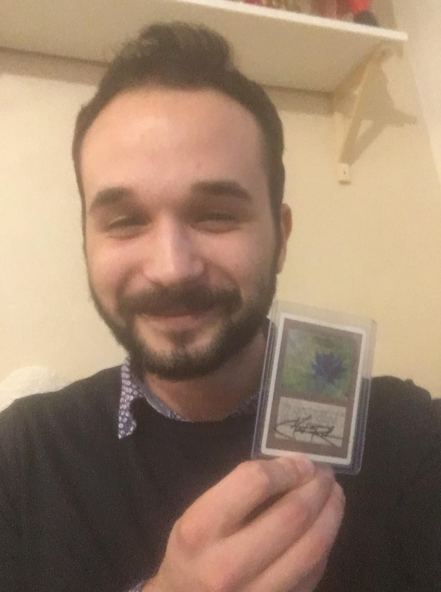
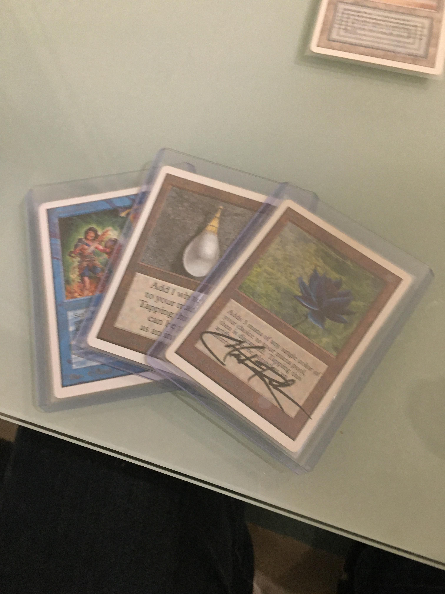
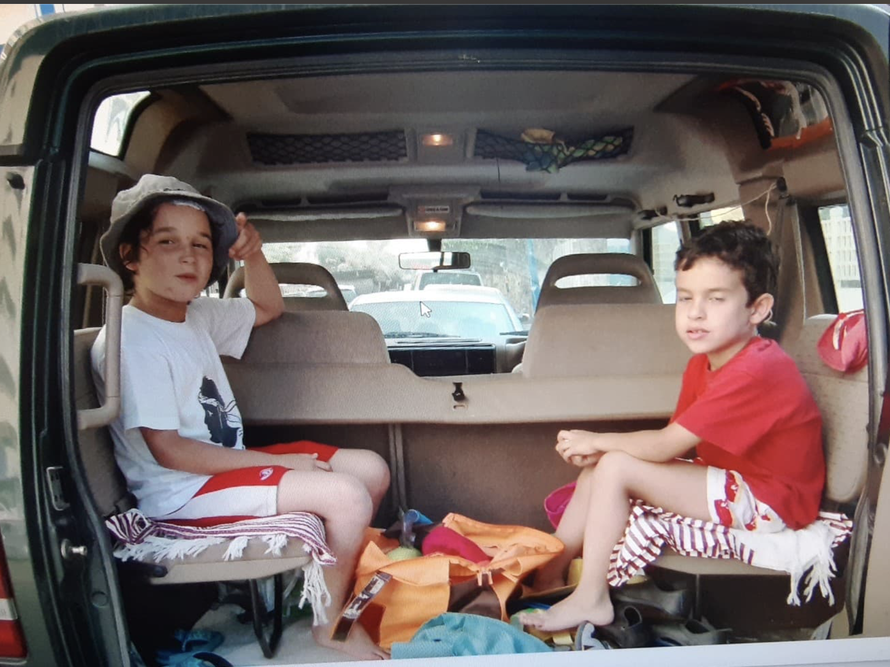
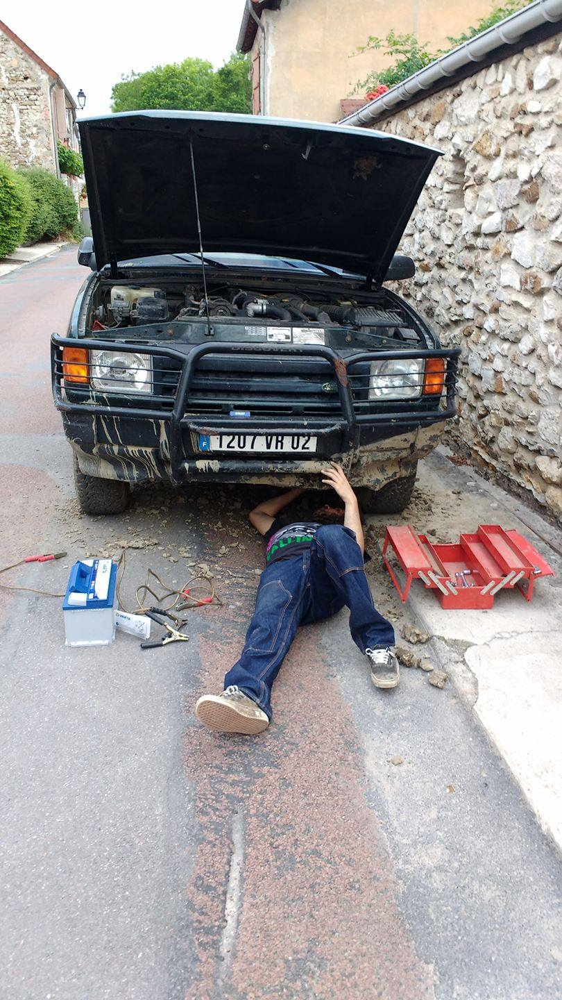

I'm a 21 years old student at ESSEC Business School. I'm much into music, old cars and collecting stuff, like Magic Cards. Talking about Magic, you can check my cards e-shop below :
Check my Cardmarket profile !I started collecting Magic Cards when I was a kid. I saw my older cousin playing games of Magic, and that's how the passion for the game grew in me. I am happy to have acquired the gems of my personnal collection at the time, because they were MUCH cheaper back then ! Below, see the three absolute masterpieces of my collection, a Timetwister, a Mox Pearl, and a Black Lotus signed by Christopher Rush ! Let's just say it's quite sought after now 😍
 I said earlier that I was into old cars, but the truth is that into ONE old car in particuler : my 1997 Land Rover.
My parents bought this car when they knew that my mother was pregnant. It has been in family since more than 20 years now, and when I turnt 18 my dad and I started fixing it after having left it 8 years in a barn ! As you can see, I have a lot of childhoo memories in it (I'm on the left on the picture 😁) !
But it's not all fun and games. The car still sometimes break down, and when it happens on the road I have to stop and try to figure out how to drive back home 🤯 !
